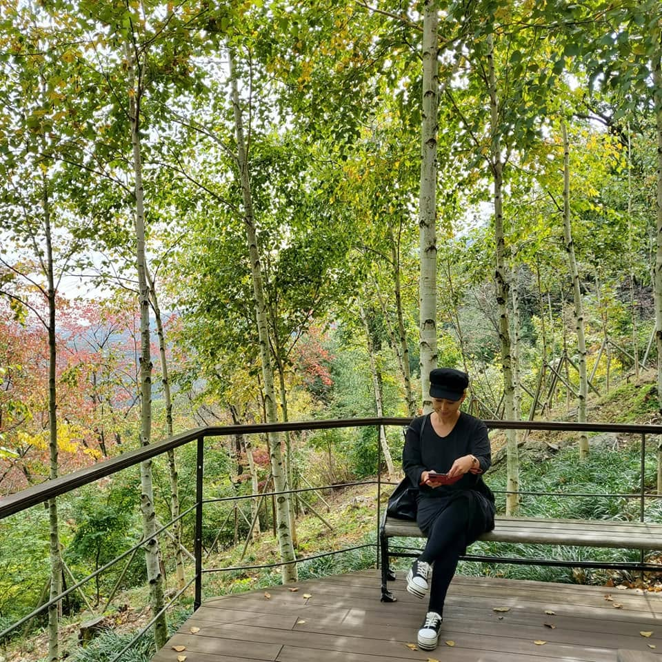

REAL KOREA WITH FLO
Meet Flo.
Not the Korea everyone visits.
The Korea locals live.
Hidden places.
Real food.
Everyday stories.

WHO IS FLO?
A Korean local with an eye for stories.
I have spent my life working with people, food, travel, design, and stories.
MADANG brings those experiences together—a place to share the Korea that guidebooks often miss.
Every place has a story.
I simply help you notice it.
WHY MADANG?
A place where stories gather.
In Korean, a madang is a courtyard—
a place where people gather, share food,exchange stories,
and spend time together.
This is my digital madang.
A place where i share the Korea I know and love.